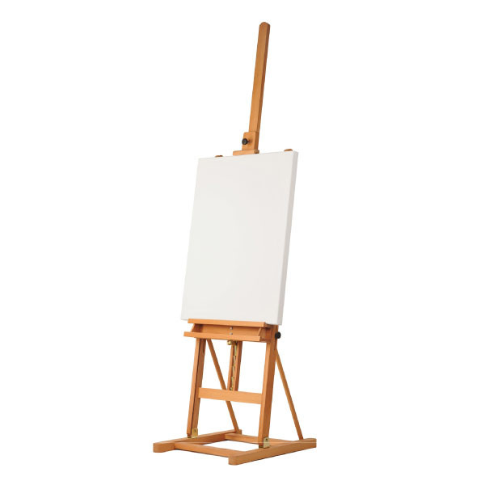
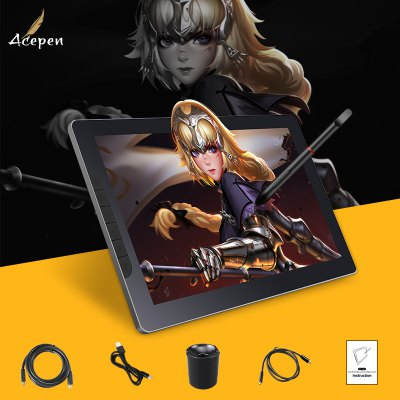

Grafinė planšetė – Tetro

 0 Pradžia Visos prekės Krepšelis DUK info@tetro.lt 86 333 333 8 info@tetro.lt 86 333 333 8
Susisiekime Meniu Pradžia Visos prekės Krepšelis DUK 1 Home Produktai Kūrybai Grafinė planšetė
Grafinė planšetė
Grafinė planšetė
Kainų intervalas: € 59.90 – € 649.00
 Užsakymą paruošime per 1 valandą, pasiimkite jį Vilniuje, Tuskulėnų g. 48 tik gavę iš mūsų žinutę.  Siuntimas: prekės pristatomos į paštomatus arba per kurjerį per 1-2 darbo dienas. Grafinė planšetė – kas tai yra?
Grafinė planšetė yra plačiai pasaulyje naudojama skaitmeninė piešimo lenta, skirta ne tik dailininkams ar dizaineriams, bet taip pat ir mėgėjams naudotojams, studentams, moksleiviams, ar mažesniems vaikams. Piešimas šioje lentoje yra įdomus ir smagus – galite piešti, dažyti, vėliau redaguoti savo piešinius.
Lengva naudotis, nes komplekte yra specialiai tam skirtas pieštukas. Piešimo lenta prijungiama prie kompiuterio USB jungtimi, o magnetiniu pieštuko galiuku atliekami stebuklingi brėžimai bei potepiai. Piešimo laukas yra 15×12.5 – 47.7 x 26.8– matmenų, todėl platus kūrybinis plotas leis ne tik nevaržomai piešti, bet ir sumažins neigiamą spaudimo poveikį, dėl mažame plote pasikartojančių brėžimų.
Skaitmeninis pieštukas sukurs pojūtį, lyg brėžtumėte paprastu pieštuku ant balto popieriaus lapo. Vieno mygtuko paspaudimu yra perjungiami du režimai – pieštuko ir trintuko.
Grafines planšetės šone naudotojo pasirenkami greitieji mygtukai gali būti trumpesnis kelias į tam tikrų funkcijų nustatymus, tokius kaip – spalvos paryškinimas/išblukinimas, vaizdo priartinimas/patolinimas, atšaukimas, valdymas ranka, teptukas, trintukas ir kt.
Kam naudojamos grafinės planšetės?
Suaugusiems kūrybingiems žmonėms atsakymas į šį klausimą yra aiškus. O busimų genijų tėveliams reikėtų žinoti, kad grafinės planšetės maksimaliai priartina rašybą, piešimą ir braižybą kompiuteryje prie natūralios. Grafinės planšetės dėka galima imituoti įvairias piešimo technikas – piešimą dažų balionėliais, akvarele, flomasteriais, pieštukais ir daug daugiau. Be to, ji padeda redaguoti nuotraukas, grafiką kompiuteriniuose žaidimuose.
Kokioms profesijoms grafinė planšetė gali būti naudinga?
Jos yra naudingos profesijoms, reikalaujančioms labai tikslių kompiuterio pelės judesių ir paspaudimų, visų pirma dizaineriams, kuriantiems piešinius ar 3d modelius, fotografams, redaguojantiems nuotraukas, ir architektams, braižantiems brėžinius, tačiau šiomis 3 profesijomis sąrašas neapsiriboja ir yra daug kitų, kuriose grafinė planšetė yra naudinga.
Kaip išsirinkti?
Savaime suprantama, kad grafinės planšetės būna skirtingos, vienas iš jų naudoja mėgėjai, o kitas profesionalai, bet visgi kuo jos skiriasi?
Pagrindinis profesionalios ir mėgėjiškos planšetės skirtumas yra ekranas, ant mėgėjiškų yra tik liečiamas paviršius, piešiant ant tokios, vaizdas rodomas kompiuterio monitoriuje, o profesionalios planšetės turi savo įmontuotą ekraną, todėl galima žiūrėti iš kart ant jo.
Antrasis esminis skirtumas tarp grafinių planšečių yra jų dydis, kuo planšetė didesnė, tuo patogiau piešti mažas detalės.
Grafinės planšetės turi ir kitus parametrus, tokius kaip: liečiamo paviršiaus raiška, rašiklio jautrumas ir rašiklio pozicijos atnaujinimo greitis, kuo aukštesni šitie parametrai tuo yra geriau, bet kadangi šie 3 parametrai visose planšetėse yra pakankamai aukšti, visų pirma rekomenduojame atkreipti dėmesį į liečiamo paviršiaus dydį ir į tai, ar yra ekranas.
Šios piešimo lentos tinka tiek dešiniarankiams tiek kairiarankiams.
Jos palaiko Adobe Photoshop, Illustrator, Autodesk Sketchbook, Corel Painter, Autodesk MAYA, Pixologic ZBrush, Paint ir kitas programas (kaip Windows taip ir Mac OS sistemose).
Modelis: GAOMON S620
Liečiamo paviršiaus raiška: 5080LPI
Rašiklio jautrumas: 81920 lygiai
Rašiklio pozicijos atnaujinimas: 266 kartai per sekundę
Piešimo lauko dydis: 16 x 10,2 cm įstrižainė 19cm (7.5″)
Modelis: Huion H610 PRO V2
Liečiamo paviršiaus raiška: 5080LPI
Rašiklio jautrumas: 8192 lygiai
Rašiklio pozicijos atnaujinimas: 233 kartai per sekundę
Piešimo lauko dydis: 25 x 15.9 cm įstrižainė 29.6cm (11.7″)
Modelis: GAOMON PD1161 (patariam pusiau profesionalams)
Liečiamo paviršiaus raiška: 5080LPI
Rašiklio jautrumas: 8192 lygiai
Rašiklio pozicijos atnaujinimas: 266 kartai per sekundę
Piešimo lauko dydis: 25.6 x 14.4 cm įstrižainė 29.4cm (11.6″)
Ekrano raika: 1920 x 1080
Modelis: BOSTO 16HD Â (patariam pusiau profesionalams)
Liečiamo paviršiaus raiška: 5080LPI
Rašiklio jautrumas: 8192 lygiai
Rašiklio pozicijos atnaujinimas: 266 kartai per sekundę
Piešimo lauko dydis: 34.4 x 19.4 cm įstrižainė 39.5cm (15.6″)
Ekrano raika: 1920 x 1080
Modelis: HUION GT-191 Â (patariam profesionaliems dizaineriams, verslui)
Liečiamo paviršiaus raiška: 5081LPI
Rašiklio jautrumas: 8192 lygiai
Rašiklio pozicijos atnaujinimas: 233 kartai per sekundę
Piešimo lauko dydis: 43.5 x 23.9 cm įstrižainė 49.6cm (19.5″)
Ekrano raika: 1920 x 1080
Garantija 1 metų
Pasidalink
Anna 2019 rugsėjo 15 à 13:40 AtsakytiNaudoju grafinę planšėtę jau ilgą laiką. Labai patogūs mygtukai, lengva naudoti, ačiū!!
Henrikas 2019 birželio 22 à 15:17 Atsakyti Nupirku VEIKK A30, parsisiunčiau driver’ius, instaliavau, mano nešiojamas kompas senas ir lėtas, tai parsisiučiau nedidelę nemokamą FireAlpaca programą piešimui. Viskas veikia. Labai smagu.
Ačiū Pavel 🙂
Pridėti atsiliepimą Atšaukti atsakymą
Rekomenduojame
3D pieštukas su ekranu
par Administratorius € 28.50 – € 93.90 Pasirinkti savybes6 spalvų dažų paletė
par Administratorius € 3.99 – € 27.90 Pasirinkti savybesPlastikas 3D pieštukui, 23 spalvos po 10 metrų
par Administratorius € 2.50 – € 55.90 Pasirinkti savybes Akcija!3D tušinukas su ekranu
par Administratorius € 29.20 – € 93.90 € 28.50 – € 91.90 Pasirinkti savybesKavos pieštukas
par Administratorius € 6.99 Į krepšelįHama karoliukai pasidaryk pats
par Administratorius € 4.50 – € 26.90 DaugiauProduktų kategorijos
Fokusininkams Į kelionę Interjeras Įrankiai skirti maistui Komfortui Kūrybai Optiniai prietaisai Rekomenduojame Saugumui Stilius Telefonų priedai Žaislai ir žaidimai Antistresiniai žaislai Kūdikiams ir vaikams Mokomieji ir eksperimentai Paaugliams ir suaugusiems Rubiko kubai Stalo žaidimai Kontaktai Visos prekės Krepšelis DUK Taisyklės Apmokėjimas Vilnius Paskambinkite mums - 86 333 333 8 Parašykite mums - info@tetro.lt I.V. pažymos Nr 668248 Pavel Malinovskij Copyright © TETRO 2016-2020